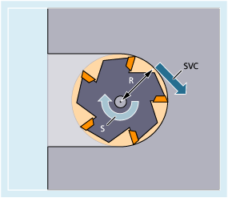

Alternativ zur Spindeldrehzahl S kann bei Fräsbearbeitungen auch die in der Praxis gebräuchlichere Werkzeug-Schnittgeschwindigkeit SVC programmiert werden.
Über den Radius R des aktiven Werkzeugs berechnet die Steuerung aus der programmierten Werkzeug-Schnittgeschwindigkeit die wirksame Spindeldrehzahl:
mit: | S | = Spindeldrehzahl in r/min |
SVC | = Werkzeug-Schnittgeschwindigkeit in m/min bzw. ft/min | |
R | = Radius des aktiven Werkzeugs in mm |
Der Werkzeugtyp ($TC_DP1) des aktiven Werkzeugs wird nicht berücksichtigt.
Die programmierte Werkzeug-Schnittgeschwindigkeit ist unabhängig vom Bahnvorschub F sowie der G-Funktionsgruppe 15 (Vorschubtyp). Drehrichtung und Spindelstart erfolgt über M3 bzw. M4, Spindel-Stopp über M5.
Eine Änderung der Werkzeugradiusdaten im Korrekturspeicher wird mit der nächsten Werkzeugkorrekturanwahl bzw. der nächsten Aktualisierung der aktiven Korrekturdaten wirksam.
Werkzeugwechsel und An-/Abwahl eines Werkzeugkorrekturdatensatzes führen zu einer Neuberechnung der wirksamen Spindeldrehzahl.
Die Programmierung der Werkzeug-Schnittgeschwindigkeit erfordert:
die geometrischen Verhältnisse eines rotierenden Werkzeugs (Fräs- oder Bohrwerkzeug)
einen aktiven Werkzeugkorrekturdatensatz
| T... D... SVC[<n>]=<Value> | |
| ... | |
| S... M3/M4 |
| Schlüsselwort zur Programmierung der Werkzeug-Schnittgeschwindigkeit | |
Einheit: | r/min | |
| Nummer der Spindel Mit dieser Adresserweiterung wird angegeben, für welche Spindel die programmierte Schnittgeschwindigkeit wirksam sein soll. Ohne Adresserweiterung bezieht sich die Angabe immer auf die aktuelle Masterspindel. Hinweis: Hinweis: | |
| Wert der Werkzeug-Schnittgeschwindigkeit | |
Einheit: | m/min (bei G71/G710) bzw. ft/min (bei G70/G700) | |
| Im Satz mit SVC muss der Werkzeugradius bekannt sein. D. h., ein entsprechendes Werkzeug inklusive Werkzeugkorrekturdatensatz muss aktiv bzw. im Satz angewählt sein. Die Reihenfolge von SVC und T/D-Anwahl bei Programmierung im gleichen Satz ist beliebig. | |
| Die Programmierung der Spindeldrehzahl führt zur Abwahl der Werkzeug-Schnittgeschwindigkeit. Hinweis: | |
| Hinweis |
Die Programmierung von SVC ist nicht möglich bei folgenden aktiven Spindel-Vorschubbewegungen: Umgekehrt führt die Programmierung eines dieser Funktionen zur Abwahl von SVC (Werkzeug-Schnittgeschwindigkeit). |
| Hinweis |
Maximale WerkzeugdrehzahlÜber die Systemvariable $TC_TP_MAX_VELO[<T-Nummer>] kann eine maximale Werkzeugdrehzahl (Spindeldrehzahl) vorgegeben werden. |
| Hinweis |
Die z. B. per CAD-Systemen generierten Werkzeugbahnen von "Normwerkzeugen", welche bereits den Werkzeugradius berücksichtigen und nur die Differenz zum Normwerkzeug im Schneidenradius enthalten, werden im Zusammenhang mit der SVC-Programmierung nicht unterstützt. |
Für alle Beispiele soll gelten: Werkzeughalter = Spindel (für Fräsen Standard)
| Programmcode | Kommentar |
|---|---|
| N10 G0 X10 T1 D1 | ; Anwahl Fräswerkzeug mit z.B. $TC_DP6[1,1] = 6 (WZ–Radius = 6 mm) |
| N20 SVC=100 M3 | ; Schnittgeschwindigkeit = 100 m/min⇒ Resultierende Spindeldrehzahl:S = (100 m/min * 1000) / (6,0 mm * 2 * 3,14) = 2653,93 U/min |
| N30 G1 X50 G95 FZ=0.03 | ; SVC und Zahnvorschub |
| ... |
| Programmcode | Kommentar |
|---|---|
| N10 G0 X20 | |
| N20 T1 D1 SVC=100 | ; Werkzeug- und Korrekturdatensatz-Anwahl zusammen mit SVC im Satz (Reihenfolge beliebig). |
| N30 X30 M3 | ; Spindelstart mit Drehrichtung rechts, Schnittgeschwindigkeit 100 m/min |
| N40 G1 X20 F0.3 G95 | ; SVC und Umdrehungsvorschub |
| Programmcode | Kommentar |
|---|---|
| N10 SVC[3]=100 M6 T1 D1 | |
| N20 SVC[5]=200 | ; Der Werkzeugradius der aktiven Werkzeugkorrektur ist für beide Spindeln gleich, die wirksame Drehzahl ist für Spindel 3 und Spindel 5 unterschiedlich. |
Annahmen:
Master bzgl. Werkzeugwechsel wird durch die Toolholder bestimmt:
MD20124 $MC_TOOL_MANAGEMENT_TOOLHOLDER > 1
Beim Werkzeugwechsel wird die alte Werkzeugkorrektur beibehalten und erst mit der Programmierung von D wird eine Werkzeugkorrektur des neuen Werkzeugs aktiv:
MD20270 $MC_CUTTING_EDGE_DEFAULT = - 2
| Programmcode | Kommentar |
|---|---|
| N10 $TC_MPP1[9998,1]=2 | ; Magazinplatz ist Werkzeughalter |
| N11 $TC_MPP5[9998,1]=1 | ; Magazinplatz ist Werkzeughalter 1 |
| N12 $TC_MPP_SP[9998,1]=3 | ; Werkzeughalter 1 ist der Spindel 3 zugeordnet |
| N20 $TC_MPP1[9998,2]=2 | ; Magazinplatz ist Werkzeughalter |
| N21 $TC_MPP5[9998,2]=4 | ; Magazinplatz ist Werkzeughalter 4 |
| N22 $TC_MPP_SP[9998,2]=6 | ; Werkzeughalter 4 ist der Spindel 6 zugeordnet |
| N30 $TC_TP2[2]="WZ2" | |
| N31 $TC_DP6[2,1]=5.0 | ; Radius = 5,0 mm von T2, Korrektur D1 |
| N40 $TC_TP2[8]="WZ8" | |
| N41 $TC_DP6[8,1]=9.0 | ; Radius = 9,0 mm von T8, Korrektur D1 |
| N42 $TC_DP6[8,4]=7.0 | ; Radius = 7,0 mm von T8, Korrektur D4 |
| ... | |
| N100 SETMTH(1) | ; Masterwerkzeughalternummer setzen |
| N110 T="WZ2" M6 D1 | ; Werkzeug T2 wird eingewechselt und Korrektur D1 aktiviert. |
| N120 G1 G94 F1000 M3=3 SVC=100 | ; S3 = (100 m/min * 1000) / (5,0 mm * 2 * 3,14) = 3184,71 U/min |
| N130 SETMTH(4) | ; Masterwerkzeughalternummer setzen |
| N140 T="WZ8" | ; Entspricht T8="WZ8" |
| N150 M6 | ; Entspricht M4=6Werkzeug "WZ8" kommt auf Mastertoolholder, aber wegen MD20270=–2 bleibt alte Werkzeugkorrektur aktiv. |
| N160 SVC=50 | ; S3 = (50 m/min * 1000) / (5,0 mm * 2 * 3,14) = 1592,36 U/minKorrektur von Werkzeughalter 1 ist noch aktiv und dieser ist Spindel 3 zugeordnet. |
| N170 D4 | ; Korrektur D4 von neuem Werkzeug "WZ8" wird aktiv (auf Werkzeughalter 4). |
| N180 SVC=300 | ; S6 = (300 m/min * 1000) / (7,0 mm * 2 * 3,14) = 6824,39 U/minSpindel 6 ist Werkzeughalter 4 zugeordnet. |
Annahmen:
Spindeln sind zugleich Werkzeughalter:
MD20124 $MC_TOOL_MANAGEMENT_TOOLHOLDER = 0
Bei Werkzeugwechsel wird automatisch Werkzeugkorrekturdatensatz D4 angewählt:
MD20270 $MC_CUTTING_EDGE_DEFAULT = 4
| Programmcode | Kommentar |
|---|---|
| N10 $TC_MPP1[9998,1]=2 | ; Magazinplatz ist Werkzeughalter |
| N11 $TC_MPP5[9998,1]=1 | ; Magazinplatz ist Werkzeughalter 1 = Spindel 1 |
| N20 $TC_MPP1[9998,2]=2 | ; Magazinplatz ist Werkzeughalter |
| N21 $TC_MPP5[9998,2]=3 | ; Magazinplatz ist Werkzeughalter 3 = Spindel 3 |
| N30 $TC_TP2[2]="WZ2" | |
| N31 $TC_DP6[2,1]=5.0 | ; Radius = 5,0 mm von T2, Korrektur D1 |
| N40 $TC_TP2[8]="WZ8" | |
| N41 $TC_DP6[8,1]=9.0 | ; Radius = 9,0 mm von T8, Korrektur D1 |
| N42 $TC_DP6[8,4]=7.0 | ; Radius = 7,0 mm von T8, Korrektur D4 |
| ... | |
| N100 SETMS(1) | ; Spindel 1 = Masterspindel |
| N110 T="WZ2" M6 D1 | ; Werkzeug T2 wird eingewechselt und Korrektur D1 aktiviert. |
| N120 G1 G94 F1000 M3 SVC=100 | ; S1 = (100 m/min * 1000) / (5,0 mm * 2 * 3,14) = 3184,71 U/min |
| N200 SETMS(3) | ; Spindel 3 = Masterspindel |
| N210 M4 SVC=150 | ; S3 = (150 m/min * 1000) / (5,0 mm * 2 * 3,14) = 4777,07 U/minBezieht sich auf die Werkzeugkorrektur D1 von T="WZ2", S1 dreht mit alter Drehzahl weiter. |
| N220 T="WZ8" | ; Entspricht T8="WZ8" |
| N230 M4 SVC=200 | ; S3 = (200 m/min * 1000) / (5,0 mm * 2 * 3,14) = 6369,43 U/minBezieht sich auf die Werkzeugkorrektur D1 von T="WZ2". |
| N240 M6 | ; Entspricht M3=6Werkzeug "WZ8" kommt auf Masterspindel, die Werkzeugkorrektur D4 des neuen Werkzeugs wird aktiv. |
| N250 SVC=50 | ; S3 = (50 m/min * 1000) / (7,0 mm * 2 * 3,14) = 1137,40 U/minKorrektur D4 auf Masterspindel ist aktiv. |
| N260 D1 | ; Korrektur D1 von neuem Werkzeug "WZ8" aktiv. |
| N270 SVC[1]=300 | ; S1 = (300 m/min * 1000) / (9,0 mm * 2 * 3,14) = 5307,86 U/minS3 = (50 m/min * 1000) / (9,0 mm * 2 * 3,14) = 884,64 U/min |
| ... |
Siehe auch:
Werkzeug-Schnittgeschwindigkeit (SVC): Weitere Informationen